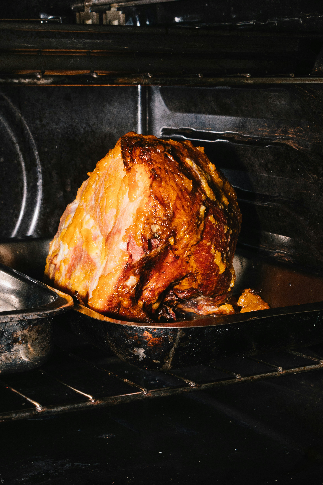

Honey Glazed Ham

About the ham
Have you ever struggled with making a perfect ham for thanksgiving. Well look no further, you will never need another ham recipie after trying this amazing glazed ham!
Ingredients
- ¾ cup water, or as needed
- 2 whole star anise
- 12 whole cloves, or more to taste
- 1(7 pound) country-style ham
- 1 cup firmly packed light brown sugar
- 1/4 cup honey
- 2 tablespoons Dijon mustard
- 2 tablespoons rice vinegar
- 1 ½ teaspoons freshly ground black pepper
- 1 ½ teaspoons freshly ground black pepper
- 1 pinch cayenne pepper
Directions
- Preheat the oven to 325 degrees F (165 degrees C).
- Prepare ham: Add water, star anise, and cloves to the bottom of a roasting pan. Place a roasting rack into the pan; place ham on the rack. Cut 1/4-inch-deep slashes, 1/2-inch apart, lengthwise and crosswise across the top of ham.
- Bake in the preheated oven for 20 minutes.
- While ham is baking, make glaze: Whisk together brown sugar, honey, mustard, vinegar, black pepper, Worcestershire sauce, and cayenne pepper in a medium bowl until thick and smooth.
- Brush glaze all over ham. Continue baking ham, brushing with glaze every 20 minutes, until glaze is deep golden and ham is heated through, about 2 hours 10 minutes. An instant-read thermometer inserted into the center of ham should read at least 145 degrees F (63 degrees C).
- Run a kitchen torch over ham until glaze is crispy and caramelized, 2 to 5 minutes.
Disclamer: I have not actually tried this recipie! Recipie is credited to "https://www.allrecipes.com/recipe/240752/chef-johns-honey-glazed-ham/"
Home Page